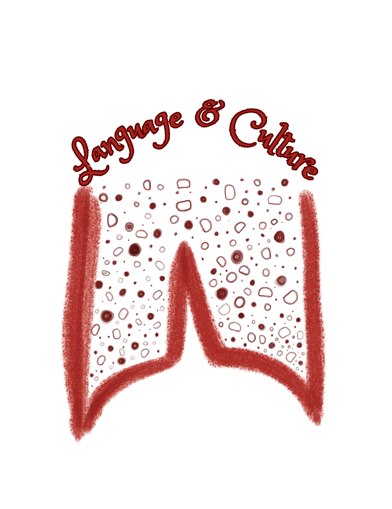
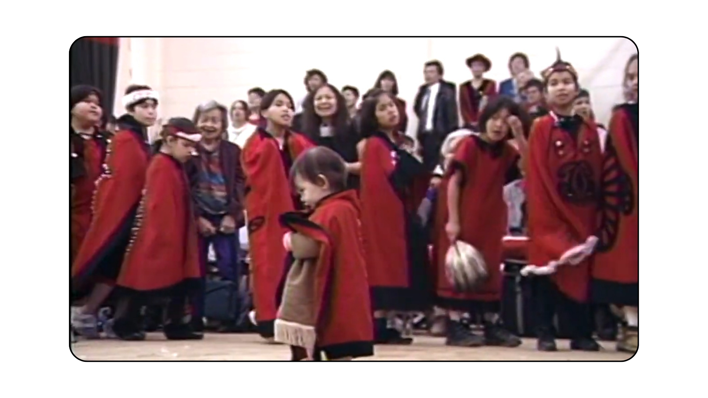

A cultural carrier across generations

Connecting to our Culture through song and dance, while strengthening the Nisg̱a'a Language.
The Nisg̱a'a language is a vital thread of living culture, carrying traditional stories, songs, ceremonies, teachings, and values across generations. Songs sung in Nisg̱a'a connect rhythm, land, and community, while ceremonies create sacred spaces where language and cultural belonging meet through shared practice.
Language strengthens our social bonds, identity, and connections to Elders' wisdom. Many Nisg̱a'a expressions hold profound cultural concepts that cannot be translated neatly into English—making respectful listening, learning, and community guidance essential to keeping these traditions vibrant and strong.
Language spellings and translations should be confirmed with Nisg̱a'a speakers and language authorities. The examples below are included as supplied in the presentation and are not a substitute for community-led language instruction.
WORD STRUCTURE EXAMPLES
meaning,
heart - the
meaning,
look for something/somebody - to
plural
meaning,
find something - to
Here are some examples of ways to find words to put together a sentece in Nisg̱a'a.